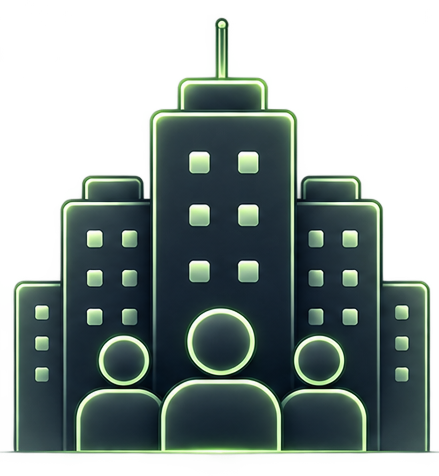
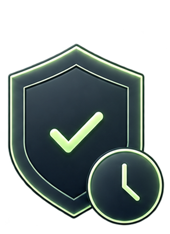
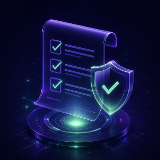
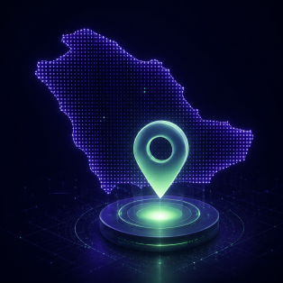
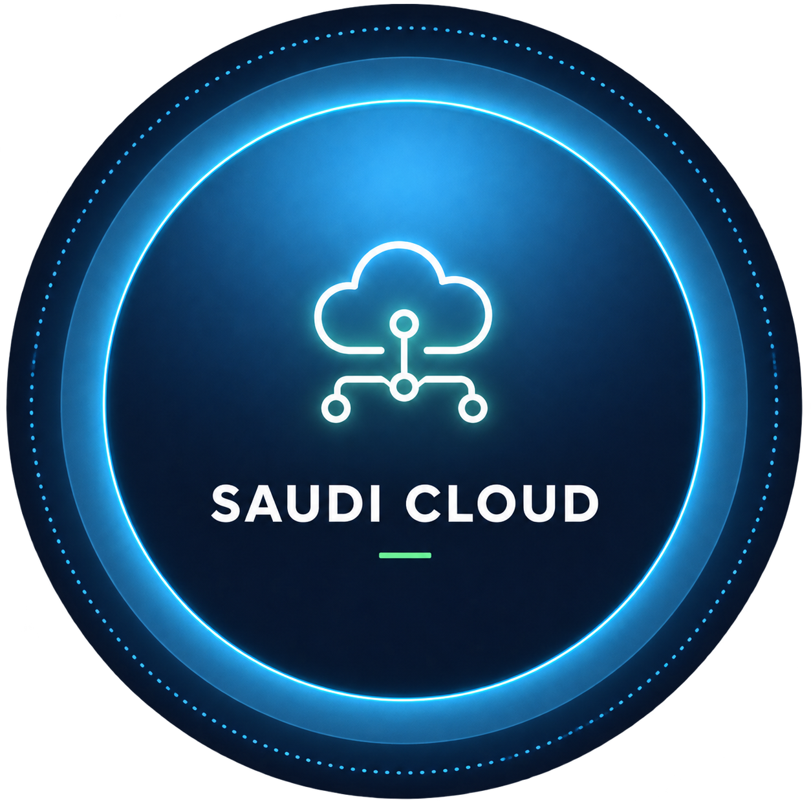

Enterprise clients
250+Saudi digital infrastructure
Connectivity, cloud, hosting, co-location, cybersecurity, professional
services, and managed operations under one accountable structure.



Enterprise clients
250+Managed connections
1,200+
Availability target
99.95%Supporting clients since
2006TopNet is a Saudi digital infrastructure provider supporting enterprise connectivity, cloud, hosting, co-location, cybersecurity, professional services, and managed operations.
Since 2006, our teams have helped organizations build resilient technology foundations with dependable service delivery, local accountability, and secure operational support.
Our story
Enterprise teams choose TopNet for dependable infrastructure, secure operations, and local accountability across every layer of digital delivery.
Learn about TopNetConnected network, cloud, and data-center delivery designed for critical Saudi enterprise workloads.
Defined availability targets, monitoring, and incident escalation keep operations clear and measurable.
Layered controls, managed monitoring, and local support help protect regulated digital operations.
Service design aligned with Saudi governance expectations and enterprise control requirements.

Saudi-based teams supporting enterprise requirements with practical, accountable service delivery.

Connected delivery across infrastructure layers, with one partner responsible for the full service path.
Run, protect, and evolve critical workloads through a dedicated
cloud experience backed by TopNet infrastructure expertise.

TopNet brings trusted cloud, security, and infrastructure
platforms into one connected delivery model.

 enom
enom


Technical perspectives on enterprise connectivity, cloud continuity, and managed infrastructure.
Browse all resources
Case Study · Connectivity

White Paper · Rayadah Cloud

Article · Managed Services
A concise enterprise enquiry routes your request to the
appropriate TopNet team.